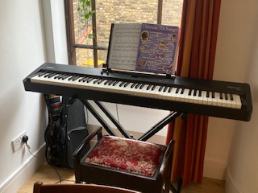
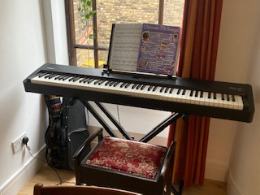

Why Coding
Ever since I can remember I have enjoyed solving puzzles. I like spending time in deep thought about logic problems, which is why I love maths and pursued this subject at University level. I continued this passion through to a career in mathematics education where I revelled in deepening my knowledge in order to teach A level. Although there are many aspects to teaching that I love and the work has challenged me in many ways, I was ready for a change in my career. I have been spending my evenings learning HTML, CSS and Javascript, and I have enjoyed it so much that I now know I want to have a career in tech.
Coding, for me, is an opportunity to make problem solving the main aspect of my work. Solving the codewars challenges reminded me of spending hours on maths problems, testing out a variety of ideas to see if I can generate a solution. I want to be able to do this everyday as part of my job! Coding is also a chance to learn a technical skill with which I can be creative. I have always wanted to make things in a way that works with my skillset (I am not crafty) and coding will let me do this.
In the future, I want to be part of a company that can make a positive impact through technology. Ultimately, I would like to code software for the education sector, designed to reduce teacher workload and improve outcomes for students. I would love to start my journey towards this at Founders and Coders.
Circus
My interest in Circus began in 2012 with a trapeze class and I have continued with aerial skills ever since. I completed a 4-month full time Circus course in 2017 and the photo shows an image of our final performance. I am on the right in yellow.
Why Founders and Coders
I found out about this course through two friends who are alumni and they have attributed their success in the field to the quality of the course provided by Founders and Coders. Their testaments were that the course was intense but extremely rewarding. The course is highly respected and that employers like F&C graduates as they have an experience closer to the realities of working as a software engineer. As someone who likes to be challenged but also prepared, these are some of the reasons I am applying to Founders and Coders.
As a teacher I am particularly excited by the pier-led and project-based learning, Within the rigidity of mainstream schooling in the UK, I have never had a chance to be part of this style of learning before, either as a student or a teacher. I know these educational approaches support growth-mindset and collaborative learning; concepts I support and know would be hugely beneficial for myself. I love working in teams and so am interested in the experience with pair programming the course will provide.
Of course, F&Cs commitment to equality is an important factor. I was the Girls Participation officer for Maths, which involved me setting up events to promote gender equal cohorts for A level Maths and spreading awareness within my department on how to promote girls’ confidence. I am passionate about STEM and hope one day to be an Ambassador for the organisation. Founders and Coders commitment to address imbalances within these industries is the main reason I want to be part of this course.
/spanish-on-blackboard-596d75c122fa3a00111f7fc9.jpg)

 
